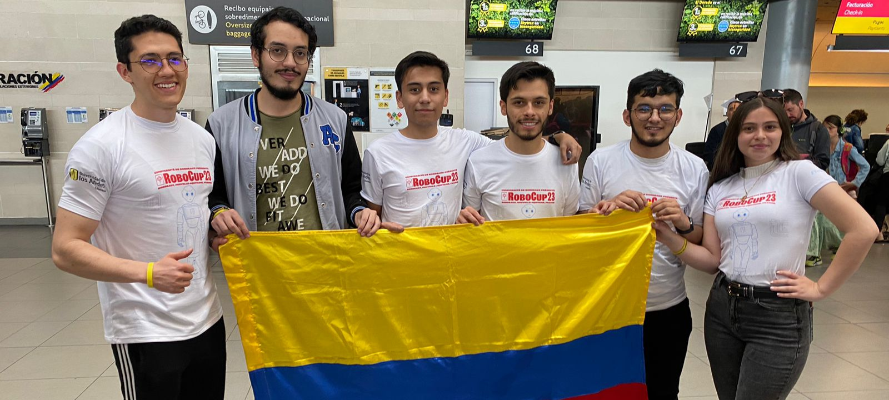

Process optimization with ML
Reduced operating costs by ~28% using predictive maintenance models.
2023 – presentExperience
MLPythonData Pipelines
3+
Years of experience
40+
Projects delivered
35%
Process improvement (avg.)
15+
Awards & certifications
Engineer with a Magister in Engineering and a strong computer science foundation. Specialized in Data Science, Artificial Intelligence, Machine Learning, and Data Engineering, with experience in software development, data modeling, automation, and statistical analysis.
I work at the intersection of research and business: designing data pipelines, predictive models, and AI solutions that improve decision-making and generate measurable value in real time.
Expertise
Track record
Reduced operating costs by ~28% using predictive maintenance models.
Increased engagement and conversion through recommender models and feature engineering.
Saved 20+ hours/week by replacing manual reporting with ETL pipelines and automated visualization.
Publications in indexed journals and applications to industrial process optimization.
Research-focused modeling to predict the performance of pumps used as turbines for sustainable energy generation.
Data analysis and machine learning models to understand consumption patterns and predict energy demand for planning and decision-making.
Designed and implemented a customer experience chatbot to improve user support and onboarding flows in a fintech product.
Sales data analysis and AI agents to automate invoicing workflows, improving speed, consistency, and operational visibility.
Built computer vision models for drones to detect pedestrians and infer quality-of-life indicators from aerial imagery to support urban analysis.
Data science project using satellite imagery to analyze urban patterns and detect public informality for research and policy insights.
Education
University diplomas and certifications across data, AI, and technical tools.
Universidad de los Andes. Thesis in modeling and data.
DiplomaUndergraduate degree. Focus on processes and computer science.
CertificationCertification in neural networks and applications.
CertificationLarge Language Models and enterprise applications.
CertificationFoundations and productivity with generative AI.
CertificationData analysis and applied statistics.

Featured news
In Bordeaux, France, the SinfonIA Uniandes team represented Colombia at RoboCup—one of the largest international robotics competitions—and achieved second place in the STANDARD Social Platform subcategory.
Source: Uniandes Engineering (Sep 2023)